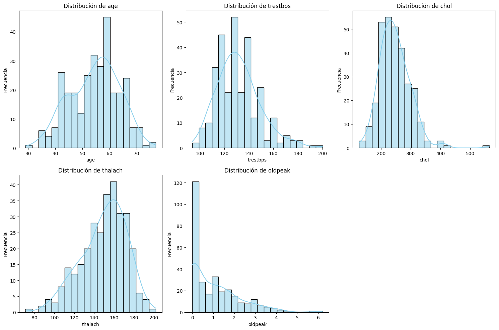
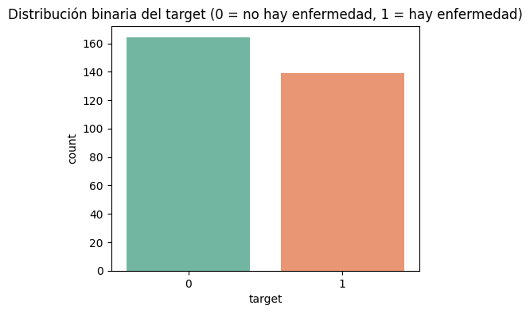
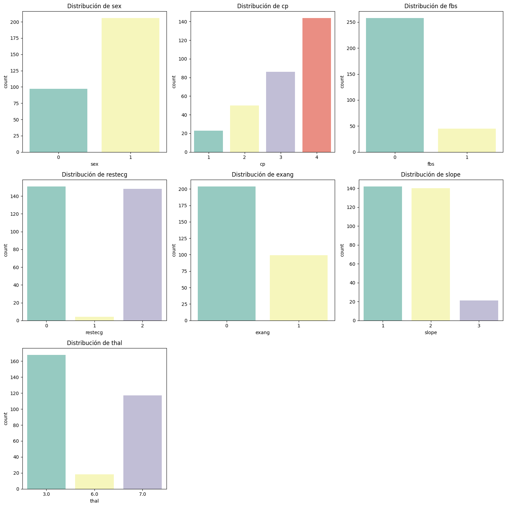
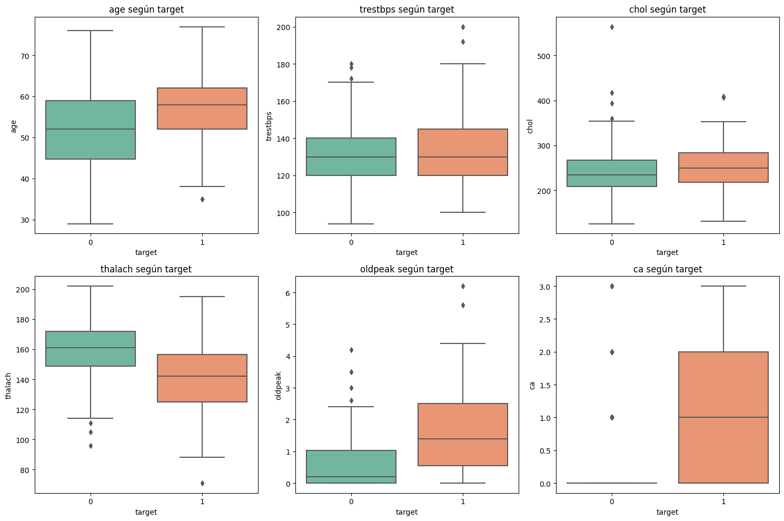
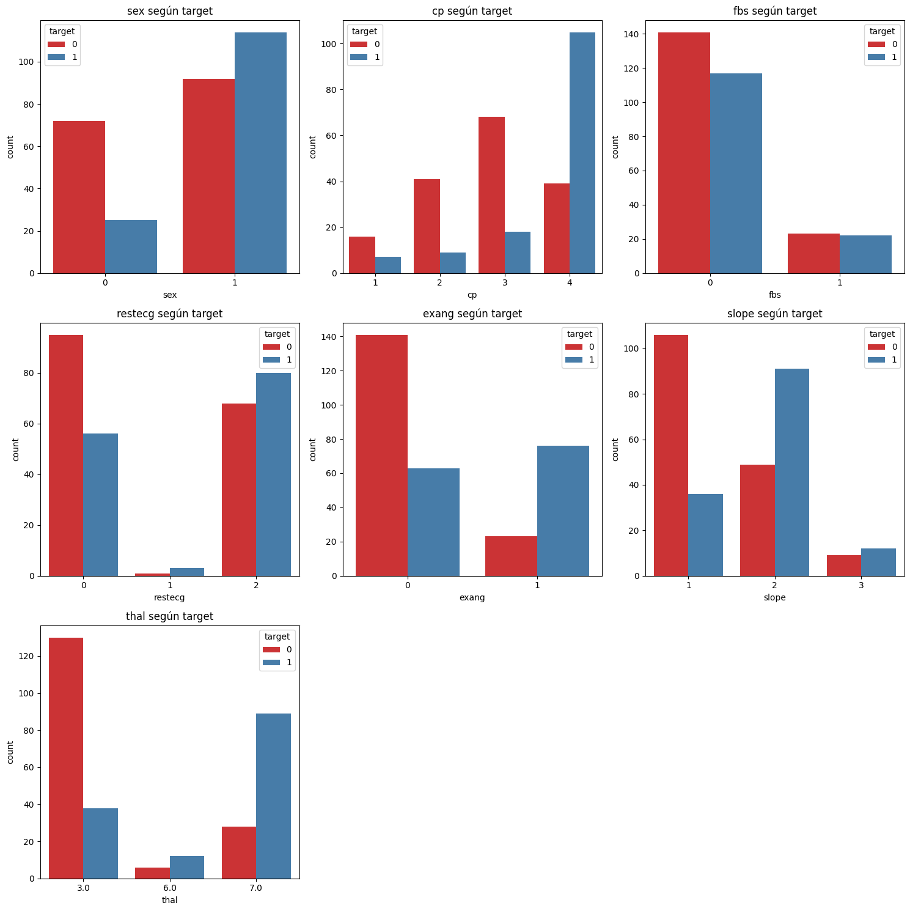
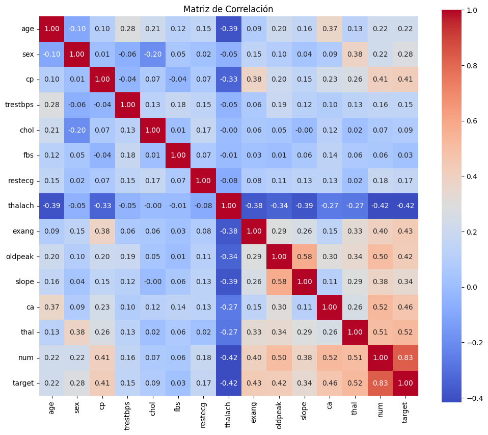
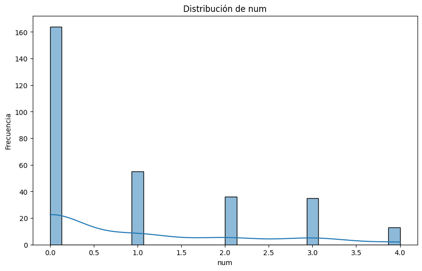

Proyecto Integrador de Aprendizaje Automático#
En este proyecto tenemos como objetivo analizar el conjunto de datos clínicos relacionados con la presencia de enfermedades cardíacas. Estudiarlos es de gran importancia para quienes trabajan en el ámbito médico ya que permite identificar patrones y factores de riesgo que influyen en la salud cardiovascular de los pacientes.
Para iniciar, requerimos de las siguientes librerías:
from scipy import stats
import numpy as np
import pandas as pd
import matplotlib.pyplot as plt
import seaborn as sns
import math
from sklearn.pipeline import Pipeline
from sklearn.model_selection import train_test_split, GridSearchCV
from sklearn.preprocessing import StandardScaler
from sklearn.naive_bayes import GaussianNB
from sklearn.metrics import accuracy_score, classification_report, confusion_matrix
from sklearn.preprocessing import StandardScaler, OneHotEncoder
from sklearn.preprocessing import LabelEncoder
from sklearn.impute import SimpleImputer
from sklearn.compose import ColumnTransformer
from sklearn.naive_bayes import GaussianNB, BernoulliNB, MultinomialNB
import warnings
warnings.filterwarnings("ignore", category=UserWarning)
warnings.filterwarnings("ignore", category=FutureWarning)
Leemos la base:
from ucimlrepo import fetch_ucirepo
# fetch del dataset
heart_disease = fetch_ucirepo(id=45)
# data
X = heart_disease.data.features
y = heart_disease.data.targets
# metadata
print(heart_disease.metadata)
print(heart_disease.variables)
{'uci_id': 45, 'name': 'Heart Disease', 'repository_url': 'https://archive.ics.uci.edu/dataset/45/heart+disease', 'data_url': 'https://archive.ics.uci.edu/static/public/45/data.csv', 'abstract': '4 databases: Cleveland, Hungary, Switzerland, and the VA Long Beach', 'area': 'Health and Medicine', 'tasks': ['Classification'], 'characteristics': ['Multivariate'], 'num_instances': 303, 'num_features': 13, 'feature_types': ['Categorical', 'Integer', 'Real'], 'demographics': ['Age', 'Sex'], 'target_col': ['num'], 'index_col': None, 'has_missing_values': 'yes', 'missing_values_symbol': 'NaN', 'year_of_dataset_creation': 1989, 'last_updated': 'Fri Nov 03 2023', 'dataset_doi': '10.24432/C52P4X', 'creators': ['Andras Janosi', 'William Steinbrunn', 'Matthias Pfisterer', 'Robert Detrano'], 'intro_paper': {'ID': 231, 'type': 'NATIVE', 'title': 'International application of a new probability algorithm for the diagnosis of coronary artery disease.', 'authors': 'R. Detrano, A. Jánosi, W. Steinbrunn, M. Pfisterer, J. Schmid, S. Sandhu, K. Guppy, S. Lee, V. Froelicher', 'venue': 'American Journal of Cardiology', 'year': 1989, 'journal': None, 'DOI': None, 'URL': 'https://www.semanticscholar.org/paper/a7d714f8f87bfc41351eb5ae1e5472f0ebbe0574', 'sha': None, 'corpus': None, 'arxiv': None, 'mag': None, 'acl': None, 'pmid': '2756873', 'pmcid': None}, 'additional_info': {'summary': 'This database contains 76 attributes, but all published experiments refer to using a subset of 14 of them. In particular, the Cleveland database is the only one that has been used by ML researchers to date. The "goal" field refers to the presence of heart disease in the patient. It is integer valued from 0 (no presence) to 4. Experiments with the Cleveland database have concentrated on simply attempting to distinguish presence (values 1,2,3,4) from absence (value 0). \n \nThe names and social security numbers of the patients were recently removed from the database, replaced with dummy values.\n\nOne file has been "processed", that one containing the Cleveland database. All four unprocessed files also exist in this directory.\n\nTo see Test Costs (donated by Peter Turney), please see the folder "Costs" ', 'purpose': None, 'funded_by': None, 'instances_represent': None, 'recommended_data_splits': None, 'sensitive_data': None, 'preprocessing_description': None, 'variable_info': 'Only 14 attributes used:\r\n 1. #3 (age) \r\n 2. #4 (sex) \r\n 3. #9 (cp) \r\n 4. #10 (trestbps) \r\n 5. #12 (chol) \r\n 6. #16 (fbs) \r\n 7. #19 (restecg) \r\n 8. #32 (thalach) \r\n 9. #38 (exang) \r\n 10. #40 (oldpeak) \r\n 11. #41 (slope) \r\n 12. #44 (ca) \r\n 13. #51 (thal) \r\n 14. #58 (num) (the predicted attribute)\r\n\r\nComplete attribute documentation:\r\n 1 id: patient identification number\r\n 2 ccf: social security number (I replaced this with a dummy value of 0)\r\n 3 age: age in years\r\n 4 sex: sex (1 = male; 0 = female)\r\n 5 painloc: chest pain location (1 = substernal; 0 = otherwise)\r\n 6 painexer (1 = provoked by exertion; 0 = otherwise)\r\n 7 relrest (1 = relieved after rest; 0 = otherwise)\r\n 8 pncaden (sum of 5, 6, and 7)\r\n 9 cp: chest pain type\r\n -- Value 1: typical angina\r\n -- Value 2: atypical angina\r\n -- Value 3: non-anginal pain\r\n -- Value 4: asymptomatic\r\n 10 trestbps: resting blood pressure (in mm Hg on admission to the hospital)\r\n 11 htn\r\n 12 chol: serum cholestoral in mg/dl\r\n 13 smoke: I believe this is 1 = yes; 0 = no (is or is not a smoker)\r\n 14 cigs (cigarettes per day)\r\n 15 years (number of years as a smoker)\r\n 16 fbs: (fasting blood sugar > 120 mg/dl) (1 = true; 0 = false)\r\n 17 dm (1 = history of diabetes; 0 = no such history)\r\n 18 famhist: family history of coronary artery disease (1 = yes; 0 = no)\r\n 19 restecg: resting electrocardiographic results\r\n -- Value 0: normal\r\n -- Value 1: having ST-T wave abnormality (T wave inversions and/or ST elevation or depression of > 0.05 mV)\r\n -- Value 2: showing probable or definite left ventricular hypertrophy by Estes\' criteria\r\n 20 ekgmo (month of exercise ECG reading)\r\n 21 ekgday(day of exercise ECG reading)\r\n 22 ekgyr (year of exercise ECG reading)\r\n 23 dig (digitalis used furing exercise ECG: 1 = yes; 0 = no)\r\n 24 prop (Beta blocker used during exercise ECG: 1 = yes; 0 = no)\r\n 25 nitr (nitrates used during exercise ECG: 1 = yes; 0 = no)\r\n 26 pro (calcium channel blocker used during exercise ECG: 1 = yes; 0 = no)\r\n 27 diuretic (diuretic used used during exercise ECG: 1 = yes; 0 = no)\r\n 28 proto: exercise protocol\r\n 1 = Bruce \r\n 2 = Kottus\r\n 3 = McHenry\r\n 4 = fast Balke\r\n 5 = Balke\r\n 6 = Noughton \r\n 7 = bike 150 kpa min/min (Not sure if "kpa min/min" is what was written!)\r\n 8 = bike 125 kpa min/min \r\n 9 = bike 100 kpa min/min\r\n 10 = bike 75 kpa min/min\r\n 11 = bike 50 kpa min/min\r\n 12 = arm ergometer\r\n 29 thaldur: duration of exercise test in minutes\r\n 30 thaltime: time when ST measure depression was noted\r\n 31 met: mets achieved\r\n 32 thalach: maximum heart rate achieved\r\n 33 thalrest: resting heart rate\r\n 34 tpeakbps: peak exercise blood pressure (first of 2 parts)\r\n 35 tpeakbpd: peak exercise blood pressure (second of 2 parts)\r\n 36 dummy\r\n 37 trestbpd: resting blood pressure\r\n 38 exang: exercise induced angina (1 = yes; 0 = no)\r\n 39 xhypo: (1 = yes; 0 = no)\r\n 40 oldpeak = ST depression induced by exercise relative to rest\r\n 41 slope: the slope of the peak exercise ST segment\r\n -- Value 1: upsloping\r\n -- Value 2: flat\r\n -- Value 3: downsloping\r\n 42 rldv5: height at rest\r\n 43 rldv5e: height at peak exercise\r\n 44 ca: number of major vessels (0-3) colored by flourosopy\r\n 45 restckm: irrelevant\r\n 46 exerckm: irrelevant\r\n 47 restef: rest raidonuclid (sp?) ejection fraction\r\n 48 restwm: rest wall (sp?) motion abnormality\r\n 0 = none\r\n 1 = mild or moderate\r\n 2 = moderate or severe\r\n 3 = akinesis or dyskmem (sp?)\r\n 49 exeref: exercise radinalid (sp?) ejection fraction\r\n 50 exerwm: exercise wall (sp?) motion \r\n 51 thal: 3 = normal; 6 = fixed defect; 7 = reversable defect\r\n 52 thalsev: not used\r\n 53 thalpul: not used\r\n 54 earlobe: not used\r\n 55 cmo: month of cardiac cath (sp?) (perhaps "call")\r\n 56 cday: day of cardiac cath (sp?)\r\n 57 cyr: year of cardiac cath (sp?)\r\n 58 num: diagnosis of heart disease (angiographic disease status)\r\n -- Value 0: < 50% diameter narrowing\r\n -- Value 1: > 50% diameter narrowing\r\n (in any major vessel: attributes 59 through 68 are vessels)\r\n 59 lmt\r\n 60 ladprox\r\n 61 laddist\r\n 62 diag\r\n 63 cxmain\r\n 64 ramus\r\n 65 om1\r\n 66 om2\r\n 67 rcaprox\r\n 68 rcadist\r\n 69 lvx1: not used\r\n 70 lvx2: not used\r\n 71 lvx3: not used\r\n 72 lvx4: not used\r\n 73 lvf: not used\r\n 74 cathef: not used\r\n 75 junk: not used\r\n 76 name: last name of patient (I replaced this with the dummy string "name")', 'citation': None}}
name role type demographic \
0 age Feature Integer Age
1 sex Feature Categorical Sex
2 cp Feature Categorical None
3 trestbps Feature Integer None
4 chol Feature Integer None
5 fbs Feature Categorical None
6 restecg Feature Categorical None
7 thalach Feature Integer None
8 exang Feature Categorical None
9 oldpeak Feature Integer None
10 slope Feature Categorical None
11 ca Feature Integer None
12 thal Feature Categorical None
13 num Target Integer None
description units missing_values
0 None years no
1 None None no
2 None None no
3 resting blood pressure (on admission to the ho... mm Hg no
4 serum cholestoral mg/dl no
5 fasting blood sugar > 120 mg/dl None no
6 None None no
7 maximum heart rate achieved None no
8 exercise induced angina None no
9 ST depression induced by exercise relative to ... None no
10 None None no
11 number of major vessels (0-3) colored by flour... None yes
12 None None yes
13 diagnosis of heart disease None no
Unimos los dataframes:
dff=heart_disease.data.features
dft=heart_disease.data.targets
def juntar_dataframes(df1, df2):
return pd.concat([df1, df2], axis=1)
df=juntar_dataframes(dff, dft)
Identificamos factores y naturaleza de las variables del dataset:
df.head()
| age | sex | cp | trestbps | chol | fbs | restecg | thalach | exang | oldpeak | slope | ca | thal | num | |
|---|---|---|---|---|---|---|---|---|---|---|---|---|---|---|
| 0 | 63 | 1 | 1 | 145 | 233 | 1 | 2 | 150 | 0 | 2.3 | 3 | 0.0 | 6.0 | 0 |
| 1 | 67 | 1 | 4 | 160 | 286 | 0 | 2 | 108 | 1 | 1.5 | 2 | 3.0 | 3.0 | 2 |
| 2 | 67 | 1 | 4 | 120 | 229 | 0 | 2 | 129 | 1 | 2.6 | 2 | 2.0 | 7.0 | 1 |
| 3 | 37 | 1 | 3 | 130 | 250 | 0 | 0 | 187 | 0 | 3.5 | 3 | 0.0 | 3.0 | 0 |
| 4 | 41 | 0 | 2 | 130 | 204 | 0 | 2 | 172 | 0 | 1.4 | 1 | 0.0 | 3.0 | 0 |
df.head(10)
| age | sex | cp | trestbps | chol | fbs | restecg | thalach | exang | oldpeak | slope | ca | thal | num | |
|---|---|---|---|---|---|---|---|---|---|---|---|---|---|---|
| 0 | 63 | 1 | 1 | 145 | 233 | 1 | 2 | 150 | 0 | 2.3 | 3 | 0.0 | 6.0 | 0 |
| 1 | 67 | 1 | 4 | 160 | 286 | 0 | 2 | 108 | 1 | 1.5 | 2 | 3.0 | 3.0 | 2 |
| 2 | 67 | 1 | 4 | 120 | 229 | 0 | 2 | 129 | 1 | 2.6 | 2 | 2.0 | 7.0 | 1 |
| 3 | 37 | 1 | 3 | 130 | 250 | 0 | 0 | 187 | 0 | 3.5 | 3 | 0.0 | 3.0 | 0 |
| 4 | 41 | 0 | 2 | 130 | 204 | 0 | 2 | 172 | 0 | 1.4 | 1 | 0.0 | 3.0 | 0 |
| 5 | 56 | 1 | 2 | 120 | 236 | 0 | 0 | 178 | 0 | 0.8 | 1 | 0.0 | 3.0 | 0 |
| 6 | 62 | 0 | 4 | 140 | 268 | 0 | 2 | 160 | 0 | 3.6 | 3 | 2.0 | 3.0 | 3 |
| 7 | 57 | 0 | 4 | 120 | 354 | 0 | 0 | 163 | 1 | 0.6 | 1 | 0.0 | 3.0 | 0 |
| 8 | 63 | 1 | 4 | 130 | 254 | 0 | 2 | 147 | 0 | 1.4 | 2 | 1.0 | 7.0 | 2 |
| 9 | 53 | 1 | 4 | 140 | 203 | 1 | 2 | 155 | 1 | 3.1 | 3 | 0.0 | 7.0 | 1 |
df.info()
<class 'pandas.core.frame.DataFrame'>
RangeIndex: 303 entries, 0 to 302
Data columns (total 14 columns):
# Column Non-Null Count Dtype
--- ------ -------------- -----
0 age 303 non-null int64
1 sex 303 non-null int64
2 cp 303 non-null int64
3 trestbps 303 non-null int64
4 chol 303 non-null int64
5 fbs 303 non-null int64
6 restecg 303 non-null int64
7 thalach 303 non-null int64
8 exang 303 non-null int64
9 oldpeak 303 non-null float64
10 slope 303 non-null int64
11 ca 299 non-null float64
12 thal 301 non-null float64
13 num 303 non-null int64
dtypes: float64(3), int64(11)
memory usage: 33.3 KB
Ahora, revisamos si hay presencia de datos faltantes:
def Nas_porcentaje_columnas(dataframe):
total_nas = dataframe.isnull().sum()
porcentaje_nas = (total_nas / len(dataframe)) * 100
nas_df = pd.DataFrame({'Total_NAs': total_nas, 'Porcentaje_NAs': porcentaje_nas})
return nas_df
Nas_porcentaje_columnas(df)
| Total_NAs | Porcentaje_NAs | |
|---|---|---|
| age | 0 | 0.000000 |
| sex | 0 | 0.000000 |
| cp | 0 | 0.000000 |
| trestbps | 0 | 0.000000 |
| chol | 0 | 0.000000 |
| fbs | 0 | 0.000000 |
| restecg | 0 | 0.000000 |
| thalach | 0 | 0.000000 |
| exang | 0 | 0.000000 |
| oldpeak | 0 | 0.000000 |
| slope | 0 | 0.000000 |
| ca | 4 | 1.320132 |
| thal | 2 | 0.660066 |
| num | 0 | 0.000000 |
df.describe()
| age | sex | cp | trestbps | chol | fbs | restecg | thalach | exang | oldpeak | slope | ca | thal | num | |
|---|---|---|---|---|---|---|---|---|---|---|---|---|---|---|
| count | 303.000000 | 303.000000 | 303.000000 | 303.000000 | 303.000000 | 303.000000 | 303.000000 | 303.000000 | 303.000000 | 303.000000 | 303.000000 | 299.000000 | 301.000000 | 303.000000 |
| mean | 54.438944 | 0.679868 | 3.158416 | 131.689769 | 246.693069 | 0.148515 | 0.990099 | 149.607261 | 0.326733 | 1.039604 | 1.600660 | 0.672241 | 4.734219 | 0.937294 |
| std | 9.038662 | 0.467299 | 0.960126 | 17.599748 | 51.776918 | 0.356198 | 0.994971 | 22.875003 | 0.469794 | 1.161075 | 0.616226 | 0.937438 | 1.939706 | 1.228536 |
| min | 29.000000 | 0.000000 | 1.000000 | 94.000000 | 126.000000 | 0.000000 | 0.000000 | 71.000000 | 0.000000 | 0.000000 | 1.000000 | 0.000000 | 3.000000 | 0.000000 |
| 25% | 48.000000 | 0.000000 | 3.000000 | 120.000000 | 211.000000 | 0.000000 | 0.000000 | 133.500000 | 0.000000 | 0.000000 | 1.000000 | 0.000000 | 3.000000 | 0.000000 |
| 50% | 56.000000 | 1.000000 | 3.000000 | 130.000000 | 241.000000 | 0.000000 | 1.000000 | 153.000000 | 0.000000 | 0.800000 | 2.000000 | 0.000000 | 3.000000 | 0.000000 |
| 75% | 61.000000 | 1.000000 | 4.000000 | 140.000000 | 275.000000 | 0.000000 | 2.000000 | 166.000000 | 1.000000 | 1.600000 | 2.000000 | 1.000000 | 7.000000 | 2.000000 |
| max | 77.000000 | 1.000000 | 4.000000 | 200.000000 | 564.000000 | 1.000000 | 2.000000 | 202.000000 | 1.000000 | 6.200000 | 3.000000 | 3.000000 | 7.000000 | 4.000000 |
df.isnull().sum()
age 0
sex 0
cp 0
trestbps 0
chol 0
fbs 0
restecg 0
thalach 0
exang 0
oldpeak 0
slope 0
ca 4
thal 2
num 0
dtype: int64
Para las dos variables que presentaron un conteo de nulos bastante pequeño, hacemos dicha imputación con la moda pues son variables categóricas.
df["ca"].fillna(df["ca"].mode()[0], inplace=True)
df["thal"].fillna(df["thal"].mode()[0], inplace=True)
df.isnull().sum()
age 0
sex 0
cp 0
trestbps 0
chol 0
fbs 0
restecg 0
thalach 0
exang 0
oldpeak 0
slope 0
ca 0
thal 0
num 0
dtype: int64
Con el tratamiento de faltantes hecho, visualizamos las distrubuciones de las variables numéricas:
# numéricas principales
num_vars = ["age", "trestbps", "chol", "thalach", "oldpeak"]
n = len(num_vars)
cols = 3
rows = math.ceil(n / cols)
fig, axes = plt.subplots(rows, cols, figsize=(15, 5*rows))
axes = axes.flatten()
for i, var in enumerate(num_vars):
sns.histplot(df[var], bins=20, kde=True, color="skyblue", ax=axes[i])
axes[i].set_title(f"Distribución de {var}")
axes[i].set_xlabel(var)
axes[i].set_ylabel("Frecuencia")
# quitamos ejes sobrantes
for j in range(i+1, len(axes)):
fig.delaxes(axes[j])
plt.tight_layout()
plt.show()

Mediante estás visualizaciones de las distribuciones vemos que para la variable edad su distribución se ve nastante normal y centrada entre los 50 y 60 años. También hay un rango desde los 30 hasta casi los 70, es decir, que pudieran contener el conjunto de datos contiene adultos de mediana y tercera edad, por lo que indica que eset grupo tiene mayor riesgo de enfermedades cardíacas.
En la distrbución de la variable de presión arterial en reposo presenta una distribución donde la mayoría de valores están entre 110 y 150 mmHg, siendo pacientes con posibles casos de hipertensión.
En la distribución de la variable sobre colesterol sérico ña mayor parte de los valores están entre 200 y 300 mg/dl, pero con valores extremos que superan los 500, por lo que hay casos de hipercolesterolemia alta.
En la distribución de la variable de frecuencia cardíaca máxima alcanzada tiene como una forma de campana con valores entre 140 y 170 lpm.
En la distribución de la variable de depresión del segmento se ve que la mayoría de los pacientes tiene valores cercanos a 0 y algunos alcanzan hasta 6, y pueden estar asociados a la mayor probabilidad de presentar la enfermedad cardíaca.
Ahora haremos un comparativo:
df['target'] = (df['num'] > 0).astype(int)
numeric_vars = ['age', 'trestbps', 'chol', 'thalach', 'oldpeak', 'ca']
categorical_vars = ['sex', 'cp', 'fbs', 'restecg', 'exang', 'slope', 'thal']
# distribución del target
plt.figure(figsize=(5,4))
sns.countplot(x='target', data=df, palette="Set2")
plt.title("Distribución binaria del target (0 = no hay enfermedad, 1 = hay enfermedad)")
plt.show()

Para nuestra variable target que la presencia o ausencia de la enfermedad cardíaca, se muestra que el grupo de pacientes sin enfermedad es un poc mayor, con uno 165 casos, mientras que el grupo con diagnóstico positivo tiene unos 140 casos. La diferencia entre los dos no es muy grande pues el conjunto de datos se encuentra balanceado.
# variables categóricas
n = len(categorical_vars)
cols = 3
rows = math.ceil(n / cols)
fig, axes = plt.subplots(rows, cols, figsize=(15, 5*rows))
axes = axes.flatten()
for i, var in enumerate(categorical_vars):
sns.countplot(x=var, data=df, ax=axes[i], palette="Set3")
axes[i].set_title(f"Distribución de {var}")
# quitar ejes vacíos
for j in range(i+1, len(axes)):
fig.delaxes(axes[j])
plt.tight_layout()
plt.show()

Vemos que la variable sex muestra que la mayoría de los pacientes son del sexo masculino. Con la variable cp, que es el tipo de dolor en el pecho, el valor más común es el 4 y el 1 es el menor.
En la variable fbs, siendo el azúcar en sangre en ayunas, la gran mayoría tiene un valor de 0, es decir, menor a 120 mg/dl, mientras que son pocos los que presentan un valor de 1 o mayor a 120 mg/dl.
En la distribución de restecg, siendo los resultados del electrocardiograma en reposo, los valores están 0 y 2, y el valor 1 aparece menos.
La variable exang, siendo la angina inducida por el ejercicio, muestra que la mayoría de los pacientes no presentan angina inducida mientras que un grupo menor con el valor 1 sí la presenta.
En slope, es decir, el pendiente del segmento durante el ejercicio máximo, los valores 1 y 2 son más frecuentes, mientras que el 3 es poco común. Y en la variable de talasemia los valores más frecuentes son 3 y 7, mientras que el valor 6 es el menor en la muestra.
Todos estos análisis muestran que ciertas condiciones clínicas son mucho más frecuentes dentro de la muestra dada y que podrían estar relacionadas con la probabilidad de desarrollar una enfermedad cardíaca.
# numéricas vs target
n = len(numeric_vars)
cols = 3
rows = math.ceil(n / cols)
fig, axes = plt.subplots(rows, cols, figsize=(15, 5*rows))
axes = axes.flatten()
for i, var in enumerate(numeric_vars):
sns.boxplot(x='target', y=var, data=df, ax=axes[i], palette="Set2")
axes[i].set_title(f"{var} según target")
for j in range(i+1, len(axes)):
fig.delaxes(axes[j])
plt.tight_layout()
plt.show()

En este análisis de los boxplots vimos que en la variable edad los pacientes con enfermedad tienden a tener una edad mayor a diferencia de quienes son más jóvenes.
En cuanto a la presión arterial en reposo los pacientes con enfermedad muestran una mayor dispersión en los valores con cifras más elevadas de quienes no presentan. En la variable de colesterol los valores son similares entre ambos grupos pero los pacientes con enfermedad tienen casos con niveles más altos y una dispersión mayor.
En el caso de la frecuencia cardíaca máxima alcanzada los pacientes con enfermedad alcanzan una frecuencia cardíaca más baja que quienen no tienen la enfermedad.
Para la variable depresión del ST los pacientes con enfermedad presentan valores más altos en comparación con los que no tienen, y en el número de vasos coloreados los pacientes sin enfermedad se encuentran en el valor 0, mientras que los que presentan enfermedad muestran un mayor número de vasos afectados.
# categóricas vs target
n = len(categorical_vars)
cols = 3
rows = math.ceil(n / cols)
fig, axes = plt.subplots(rows, cols, figsize=(15, 5*rows))
axes = axes.flatten()
for i, var in enumerate(categorical_vars):
sns.countplot(x=var, hue='target', data=df, ax=axes[i], palette="Set1")
axes[i].set_title(f"{var} según target")
for j in range(i+1, len(axes)):
fig.delaxes(axes[j])
plt.tight_layout()
plt.show()

Al ver los gráficos se muestran la relación entre variables médicas clave y la presencia de enfermedad cardíaca.
Para la talasemia muestra alta correlación con enfermedad, en el dolor torácico presenta mayor prevalencia de enfermedad, y en la angina inducida se presencia una mayor probabilidad de enfermedad
En el pendiente ST su se ve una asociación con la enfermedad y en el ECG en reposo muestran mayor riesgo
En la azúcar en ayunas se muestra mínima diferencia entre grupos, por lo que la presencia de la enfermedad es la misma. Para la variable sexo existe una pequeña diferencia pero no es determinante por sí sola.
Por lo que las variables relacionadas con pruebas de esfuerzo y síntomas cardíacos son mejores predictores para el diagnóstico de tener una enfermedad cardíaca.
Luego evaluamos normalidad:
def kstest_df(df):
results = {}
norm = []
no_norm = []
for column in df.columns:
data = df[column].dropna()
if len(data) < 2:
results[column] = (np.nan, np.nan)
continue
mean = np.mean(data)
std = np.std(data, ddof=1)
if std == 0:
results[column] = (np.nan, np.nan)
continue
ks_stat, p_value = stats.kstest(data, 'norm', args=(mean, std))
results[column] = (ks_stat, p_value)
if p_value < 0.05:
no_norm.append(column)
else:
norm.append(column)
return norm, no_norm, results
# Uso de la función
norm_columns, no_norm_columns, test_results = kstest_df(df)
print(f"\nColumnas con distribución normal: {norm_columns}")
print(f"Columnas sin distribución normal: {no_norm_columns}")
Columnas con distribución normal: ['age', 'chol', 'thalach']
Columnas sin distribución normal: ['sex', 'cp', 'trestbps', 'fbs', 'restecg', 'exang', 'oldpeak', 'slope', 'ca', 'thal', 'num', 'target']
Vemos que las variables no normales son aquellas con menos relevancia en cuanto a diferencia entre grupos de quienes si presentarían o no la enfermedad cardiaca, por lo cual las tendremos en mente pues ellas son las que ppdrían generar resultados erróneos o contra-intuitivos al estudio. Por ello, verificamos cuánta correlación tiene cada una y descartar cuales no tendrían repercusiones en el estudio:
def correlation_grafico(df):
import seaborn as sns
import matplotlib.pyplot as plt
plt.figure(figsize=(12, 10))
correlation_matrix = df.corr()
sns.heatmap(correlation_matrix, annot=True, fmt=".2f", cmap='coolwarm', square=True)
plt.title('Matriz de Correlación')
plt.show()
correlation_grafico(df)

Vemos en la matriz de correlación una correlación fuerte con la variable num las siguientes variables:
cp (tipo de dolor torácico)
exang (angina inducida)
oldpeak (depresión del ST)
ca (número de vasos)
thal (resultado de talio)
Todas con presencia fuerte de enfermedad cardíaca.
Para la variable talasemia muestra una correlación negativa, por lo que para una menor frecuencia cardíaca máxima durante el ejercicio hay mayor riesgo de enfermedad.
Para las variables edad, sexo, presión arterial, colesterol, azucar en ayunas y ECG en reposo muestran correlaciones no tan significativas, mientras que las correlaciones fuertes entre variables como oldpeak-exang, oldpeak-slope, ca-thal y thal-slope tienen posibles relaciones clínicas, es decir, más relación entre el ejercicio y el diagnóstico.
def distribucion_grafico(df, column):
import seaborn as sns
import matplotlib.pyplot as plt
plt.figure(figsize=(10, 6))
sns.histplot(df[column].dropna(), kde=True, bins=30)
plt.title(f'Distribución de {column}')
plt.xlabel(column)
plt.ylabel('Frecuencia')
plt.show()
distribucion_grafico(df, 'num')

Mediante este gráfico de distribución de la variable num muestra el grado de enfermedad cardíaca con escalas de 0 a 4, y se que en los valores 0, con ausencia de enfermedad, y 1, con enfermedad leve, son los más frecuentes, mientras que los valores 2, 3 y 4 presentan una frecuencia menor, es decir, presencia moderada de la enfermedad.
Por ello, aplicamos Bayes para confirmar estos resultados:
X = df.drop('num', axis=1)
y = df['num']
categorical_vars = ['sex', 'cp', 'fbs', 'restecg', 'exang', 'slope', 'thal']
numeric_vars = ['age', 'trestbps', 'chol', 'thalach', 'oldpeak', 'ca']
target_var = 'num'
# separar features y target
X = df.drop(target_var, axis=1)
y = (df[target_var] > 0).astype(int) # target a binario
# dividir train y test
X_train, X_test, y_train, y_test = train_test_split(X, y, test_size=0.30, random_state=101)
# definir el preprocesador
preprocessor = ColumnTransformer(
transformers=[
('num', Pipeline([
('imputer', SimpleImputer(strategy='median')),
('scaler', StandardScaler())
]), numeric_vars),
('cat', Pipeline([
('imputer', SimpleImputer(strategy='most_frequent')),
('onehot', OneHotEncoder(drop='first', sparse_output=False))
]), categorical_vars)
],
remainder='drop'
)
# función para evaluar cada modelo
def evaluate_model(model, model_name):
pipe = Pipeline([
('preprocessor', preprocessor),
('clf', model)
])
pipe.fit(X_train, y_train)
y_pred = pipe.predict(X_test)
y_pred_proba = pipe.predict_proba(X_test)[:, 1] if hasattr(model, 'predict_proba') else None
acc = accuracy_score(y_test, y_pred)
print(f'{model_name} - Resultados:')
print(f'Accuracy: {acc:.4f}')
print('\nClassification Report:')
print(classification_report(y_test, y_pred))
return acc, pipe
# GaussianNB
print("Gaussian Naive Bayes")
gaussian_acc, gaussian_pipe = evaluate_model(GaussianNB(var_smoothing=1e-9), "GaussianNB")
# BernoulliNB para binarias
print("\n Bernoulli Naive Bayes")
bernoulli_acc, bernoulli_pipe = evaluate_model(BernoulliNB(alpha=1.0), "BernoulliNB")
# MultinomialNB para conteos o frecuencias
print("\n Multinominal Baive Bayes")
from sklearn.preprocessing import KBinsDiscretizer
preprocessor_multinomial = ColumnTransformer(
transformers=[
('num', Pipeline([
('imputer', SimpleImputer(strategy='median')),
('discretizer', KBinsDiscretizer(n_bins=5, encode='ordinal', strategy='quantile'))
]), numeric_vars),
('cat', Pipeline([
('imputer', SimpleImputer(strategy='most_frequent')),
('onehot', OneHotEncoder(drop='first', sparse_output=False))
]), categorical_vars)
],
remainder='drop'
)
pipe_multinomial = Pipeline([
('preprocessor', preprocessor_multinomial),
('clf', MultinomialNB(alpha=1.0))
])
pipe_multinomial.fit(X_train, y_train)
y_pred_multinomial = pipe_multinomial.predict(X_test)
multinomial_acc = accuracy_score(y_test, y_pred_multinomial)
print(f'Resultados de MultinomialNB:')
print(f'Accuracy: {multinomial_acc:.4f}')
print('\nReporte de clasificación:')
print(classification_report(y_test, y_pred_multinomial))
print("Comparación de modelos")
print(f"GaussianNB Accuracy: {gaussian_acc:.4f}")
print(f"BernoulliNB Accuracy: {bernoulli_acc:.4f}")
print(f"MultinomialNB Accuracy: {multinomial_acc:.4f}")
# mejor modelo
accuracies = {
'GaussianNB': gaussian_acc,
'BernoulliNB': bernoulli_acc,
'MultinomialNB': multinomial_acc
}
best_model = max(accuracies, key=accuracies.get)
print(f"\nMejor modelo: {best_model} con accuracy: {accuracies[best_model]:.4f}")
print("\nAnálisis de bernoulli")
bern_model = bernoulli_pipe.named_steps['clf']
feature_names = gaussian_pipe.named_steps['preprocessor'].get_feature_names_out()
# coeficientes logarítmicos
log_probs = bern_model.feature_log_prob_
feature_importance = pd.DataFrame({
'feature': feature_names,
'log_prob_class_0': log_probs[0],
'log_prob_class_1': log_probs[1],
'difference': log_probs[1] - log_probs[0] # Diferencia entre clases
}).sort_values('difference', ascending=False)
print("Top 10 características más importantes para BernoulliNB:")
print(feature_importance.head(10))
Gaussian Naive Bayes
GaussianNB - Resultados:
Accuracy: 0.6923
Classification Report:
precision recall f1-score support
0 0.65 0.94 0.77 49
1 0.85 0.40 0.55 42
accuracy 0.69 91
macro avg 0.75 0.67 0.66 91
weighted avg 0.74 0.69 0.67 91
Bernoulli Naive Bayes
BernoulliNB - Resultados:
Accuracy: 0.8242
Classification Report:
precision recall f1-score support
0 0.84 0.84 0.84 49
1 0.81 0.81 0.81 42
accuracy 0.82 91
macro avg 0.82 0.82 0.82 91
weighted avg 0.82 0.82 0.82 91
Multinominal Baive Bayes
Resultados de MultinomialNB:
Accuracy: 0.7582
Reporte de clasificación:
precision recall f1-score support
0 0.78 0.78 0.78 49
1 0.74 0.74 0.74 42
accuracy 0.76 91
macro avg 0.76 0.76 0.76 91
weighted avg 0.76 0.76 0.76 91
Comparación de modelos
GaussianNB Accuracy: 0.6923
BernoulliNB Accuracy: 0.8242
MultinomialNB Accuracy: 0.7582
Mejor modelo: BernoulliNB con accuracy: 0.8242
Análisis de bernoulli
Top 10 características más importantes para BernoulliNB:
feature log_prob_class_0 log_prob_class_1 difference
17 cat__thal_7.0 -1.817735 -0.375612 1.442123
13 cat__exang_1.0 -1.989585 -0.624828 1.364757
9 cat__cp_4.0 -1.466337 -0.251314 1.215023
5 num__ca -1.584120 -0.484246 1.099874
11 cat__restecg_1.0 -4.762174 -3.901973 0.860201
14 cat__slope_2.0 -1.235813 -0.405465 0.830348
4 num__oldpeak -1.360977 -0.552069 0.808908
0 num__age -0.870354 -0.375612 0.494741
1 num__trestbps -1.048602 -0.703300 0.345302
6 cat__sex_1.0 -0.572519 -0.238411 0.334108
Los resultados de Bayes muestran el desempeño de las tres variantes del clasificador al diagnóstico de la enfermedad cardíaca, y el resultado de BernoulliNB es el modelo óptimo pues tiene un accuracy del 82.42%.
Para el GaussianNB, con un 69.23% de accuracy, puede tener un problema de sensibilidad porque solo detecta el 40% de los casos positivos, siendo la enfermedad, lo que genera riesgo de falsos negativos junto con el bajo rendimiento de supuesto de normalidad en variables clave la hace un poco ineficiente.
Para el MultinomialNB, con un 75.82% de accuracy, muestra un rendimiento con equilibrio en precision y recall con un 75 al 78% para ambas clases, siendo adecuado pero para el contexto no.
Y para BernoulliNB, con un 82.42% de accuracy, logra tener el mejor balance entre precisión con un 84% para sanos y 81% para enfermos, y sensibilidad de un 81% de detección de enfermos, así es mejor para minimizar los falsos negativos y los falsos positivos.
Siendo el modelo BernoulliNB el indicado, analizando sus características muestran que los predictores más relevante pudieran ser:
La talasemia con diferencia de log-probabilidad de 1.44.
La angina inducida por ejercicio con diferencia de 1.36.
El dolor torácico asintomático con diferencia de 1.22.
El número de vasos principales afectados con diferencia de 1.10.
La depresión del segmento ST con diferencia de 0.81.
Por ello, el modelo BernoulliNB es el algoritmo más adecuado para este estudio ya que combina alta precisión predictiva con inplicaciones más certeras para el trabajo. También, las variables que el modelo identifica como más relevantes coinciden con los marcadores médicos para enfermedad cardíaca, por lo que es más práctico usarlo como herramienta de apoyo para diagnosticar.